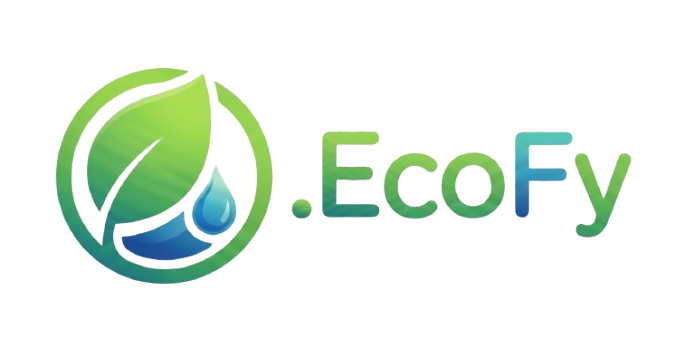
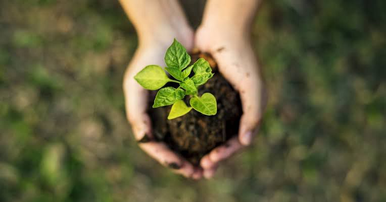
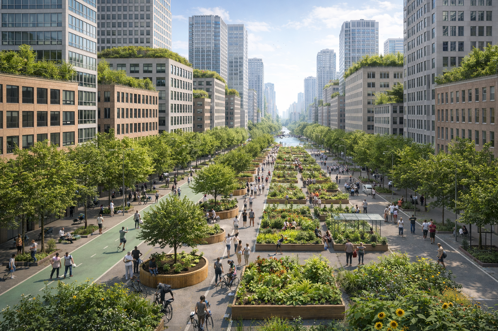

Transformando cidades
em ecossistemas vivos.
O que é a EcoFy?
A EcoFy é uma iniciativa focada em reflorestamento urbano, criada com o objetivo de transformar cidades em ambientes mais verdes, saudáveis e equilibrados.
Acreditamos que a natureza precisa fazer parte do espaço urbano para melhorar a qualidade de vida das pessoas. Atuamos levando soluções sustentáveis para áreas urbanas, promovendo o plantio deárvores, a recuperação de espaços degradados e o fortalecimento da relação entre a cidade e o meio ambiente.
A EcoFy une planejamento ambiental, tecnologia e ação consciente para gerar impacto real, ajudando a reduzir ilhas de calor, melhorar a qualidade do ar e criar cidades mais resilientes para ofuturo.
- Reflorestamento urbano planejado.
- Impacto ambiental real.
- Foco em cidades e comunidades.
Como a EcoFy atua?
A EcoFy desenvolve soluções sustentáveis para integrar a natureza ao ambiente urbano de forma planejada e estratégica.

Mapeamento Urbano
Identificamos áreas com potencial de reflorestamento e analisamos dados ambientais para planejar ações eficientes.
Plantio estratégico
Realizamos o plantio de espécies adequadas para cada região, promovendo equilíbrio ambiental e sustentabilidade.
Monitoramento contínuo
Acompanhamos o crescimento das áreas reflorestadas e avaliamos o impacto ambiental gerado ao longo do tempo.

Impactos e Resultados
A EcoFy acredita que resultados concretos são fundamentais para transformar cidades de forma sustentável e duradoura. Mais do que plantar árvores, buscamos gerar impactos reais e mensuráveis que contribuam para a melhoria da qualidade de vida da população e para o equilíbrio ambiental urbano.
Nossas ações são acompanhadas por indicadores e análises que permitem avaliar o desenvolvimento das áreas reflorestadas, a redução de ilhas de calor e a melhoria na qualidade do ar. Cada projeto é planejado para deixar benefícios contínuos para a comunidade e para o meio ambiente.
+12.000
Árvores plantadas em áreas urbanas.
-35%
Redução média de ilhas de calor
+28%
Melhoria na qualidade do ar.
+20
Bairros impactados por projetos sustentáveis.
Por que o reflorestamento urbano é essencial?
As cidades enfrentam desafios ambientais cada vez mais intensos. O crescimento urbano acelerado, a redução de áreas verdes e o aumento da poluição impactam diretamente a saúde, o bem-estar e a qualidade de vida da população.
O reflorestamento urbano não é apenas uma ação ambiental isolada, é uma estratégia fundamental para tornar os centros urbanos mais equilibrados, resilientes e preparados para o futuro. Integrar a natureza ao espaço urbano significa investir em cidades mais humanas e sustentáveis.
Redução de ilhas de calor
Áreas verdes contribuem para a regulação térmica das cidades, reduzindo os efeitos do calor excessivo causado pela concentração de concreto e asfalto. O plantio planejado de árvores auxilia na estabilização das temperaturas urbanas e na criação de ambientes mais equilibrados.
Melhora da qualidade do ar
A vegetação urbana desempenha um papel relevante na absorção de poluentes atmosféricos, contribuindo para a melhoria da qualidade do ar. Esse processo favorece a saúde pública e reduz impactos ambientais a longo prazo.
Qualidade de vida urbana
Espaços verdes bem planejados fortalecem o uso consciente do ambiente urbano, promovendo convivência social, bem-estar e desenvolvimento sustentável. A integração entre natureza e cidade amplia a qualidade dos espaços públicos e estimula uma relação mais equilibrada com o meio ambiente.
Faça parte da transformação
A construção de cidades mais sustentáveis depende da participação de todos. A EcoFy acredita que pequenas ações podem gerar grandes impactos quando pessoas, comunidades e organizações trabalham juntas por um objetivo comum.
Convidamos você a conhecer mais sobre nossas iniciativas e a fazer parte desse movimento em direção a cidades mais verdes, equilibradas e preparadas para o futuro.